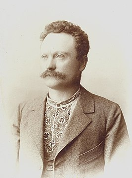

Іва́н Я́кович Фра́нко́ - (27 серпня 1856, с. Нагуєвичі — 28 травня 1916, Львів, Австро-Угорщина) — видатний український поет, прозаїк, драматург, літературний критик, публіцист, перекладач, науковець, громадський і політичний діяч. Доктор філософії (1893), доктор габілітований (1895), дійсний член Наукового товариства імені Шевченка (1899), почесний доктор Харківського університету (1906)[7][8]. Член Всеукраїнського Товариства «Просвіта». Упродовж своєї понад 40-літньої творчої активності Франко надзвичайно плідно працював як оригінальний письменник (поет, прозаїк, драматург) і перекладач, літературний критик і публіцист, багатогранний науковець — літературо-, мово-, перекладо- й мистецтвознавець, етнолог і фольклорист, історик, соціолог, політолог, економіст, філософ. Його творчий доробок, писаний українською (більшість текстів), польською, німецькою, російською, болгарською, чеською мовами, за приблизними оцінками налічує кілька тисяч творів загальним обсягом понад 100 томів. Усього за життя Франка окремими книгами і брошурами було понад 220 видань, у тому числі понад 60 збірок його оригінальних і перекладних творів різних жанрів. Він був одним із перших професійних українських письменників, тобто заробляв на життя літературною працею.